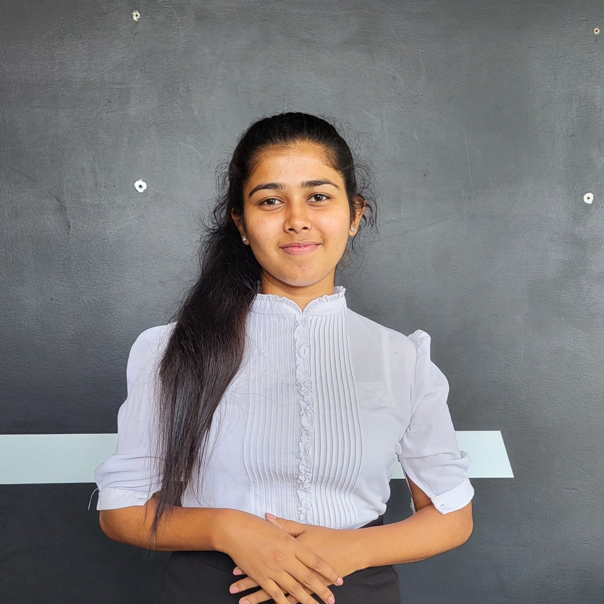

The problem
Hiring teams screen hundreds of resumes and run interviews by hand. Candidates are reduced to keywords, interview difficulty never changes, and human judgement varies from panel to panel.
R26-IT-105 · SLIIT FACULTY OF COMPUTING
Post a role. Smart Recruiter reads the resumes, runs the interview, watches and listens, and adapts every question to the candidate in front of it.
Hiring teams screen hundreds of resumes and run interviews by hand. Candidates are reduced to keywords, interview difficulty never changes, and human judgement varies from panel to panel.
Smart Recruiter fuses an explainable skill graph, a job-grounded adaptive interview, accent-invariant speech confidence and consent-aware visual behaviour into one competency profile a human can review.
Turns a résumé and public GitHub activity into an explainable 0–10 competency profile.
Learn more →Tracks gaze and brief facial movements, reporting observations only — never deception.
Learn more →Reads delivery confidence from the acoustic signal, independent of the speaker's accent.
Learn more →Maya asks job-grounded questions whose difficulty adapts to every answer.
Learn more →Progress at Progress Presentation 1
